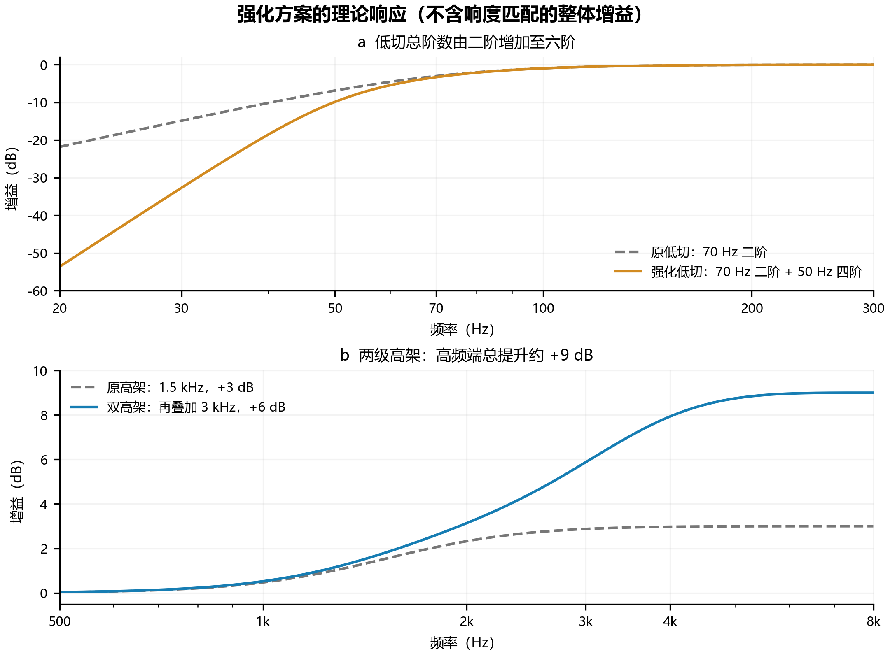
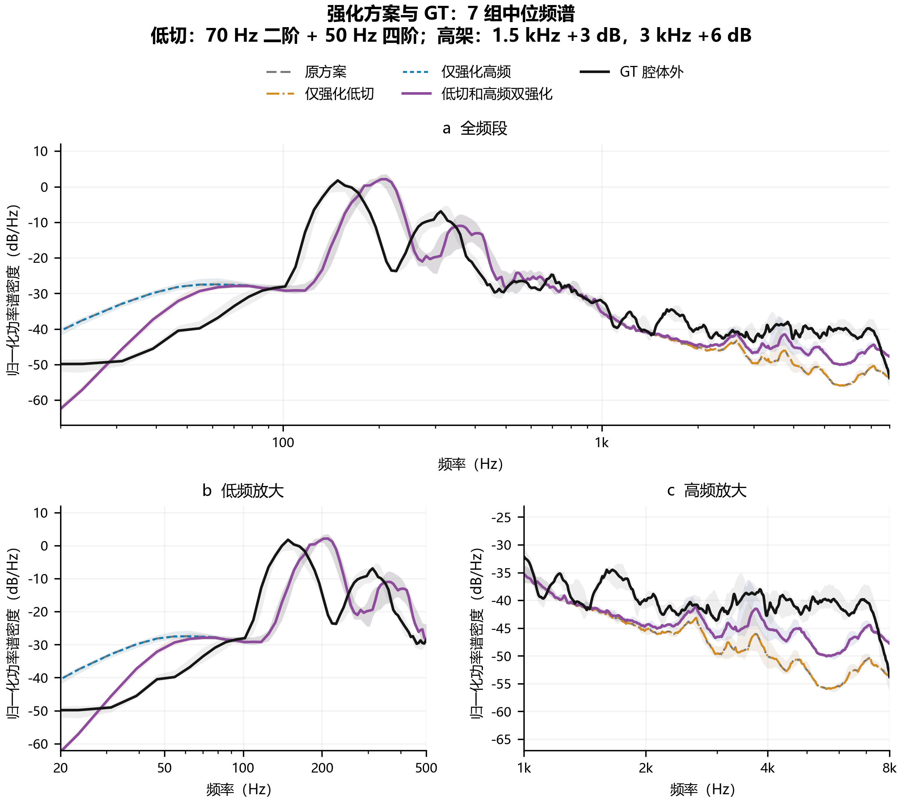

高阶低切 + 高频强化试听
原方案 / 仅强化低切 / 仅强化高频 / 双强化，同组响度匹配。
先对比“原方案”与“低切和高频双强化”，再用两种单项强化判断变化来自哪里。
滤波参数与验证说明
高阶低切与强化高频试听
原方案：70 Hz二阶巴特沃兹高通 + 1.5 kHz高架+3 dB。
仅强化低切：原方案再串联50 Hz四阶巴特沃兹高通，总低切阶数六阶。不同截止频率的级联，不等同于单一70 Hz六阶巴特沃兹。
仅强化高频：原方案再串联3 kHz高架+6 dB，两级二阶高架总四阶EQ，高频端总增益约+9 dB。
双强化：同时加入以上两项，共5个二阶节。所有滤波均使用SOS，极点稳定性已检查；实际试听从旧原方案文件继续追加处理，没有重复加入已有滤波。
阶数主要改变截止以下的滚降陡度。新增四阶50 Hz高通在50 Hz本身仍约-3 dB；与原70 Hz二阶叠加后，50 Hz总衰减更深，70 Hz附近也略有变化，不是严格保持每个频点不变。
3 kHz是新增高架的转折中点，在3 kHz约贡献+3 dB，在更高频逐渐达到+6 dB；不是3 kHz处突然跳变。高频增强也会提升该频段底噪，是否更自然需试听确认。
每组4份，7组共28份16 kHz单声道PCM24 WAV。每组4份用恒定增益匹配LUFS，不使用AGC、限幅、动态压缩或降噪；峰值不足时整组目标响度共同降低。
既有削波或缺失录音没有恢复。高阶因果IIR会改变相位和频率相关群延迟，这些试听保留真实因果效果，没有用双向零相位滤波掩盖它。
频谱比较统一归一化500~2000 Hz能量，7组均纳入；GT是相同人和文本的另一次录音，频谱差不是精确传递函数或主观音质评分。
原始录音、此前84份试听和现有代码均未修改。
参考：SciPy Butterworth https://docs.scipy.org/doc/scipy-1.12.0/reference/generated/scipy.signal.butter.html
高架公式：W3C Audio EQ Cookbook https://www.w3.org/TR/audio-eq-cookbook/

